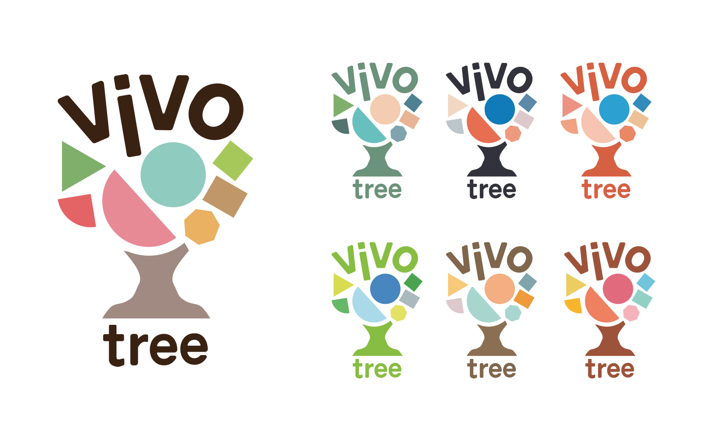
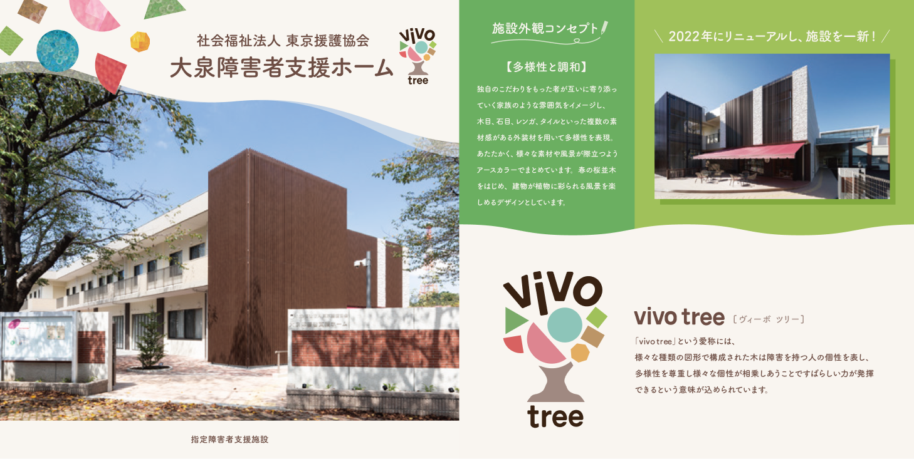
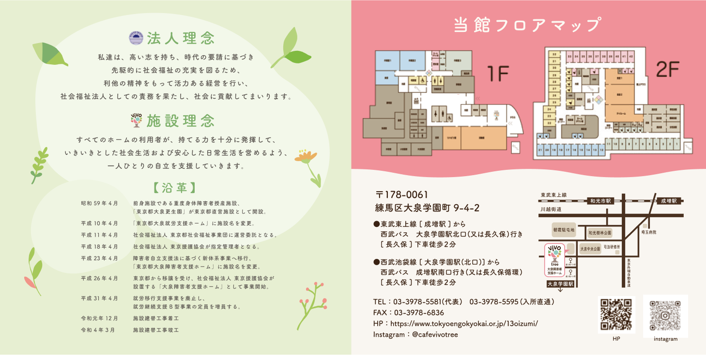

WORKS
大泉障害者支援施設
VIVOtree
ロゴタイポグラフィ/ロゴカラーリング/パンフレット/キャラクターデザイン
DTP
illust
2021-2022
vivo treeには、様々な種類の図形が相愛しあうことですばらしい力が発揮できるという意味が込められています。vivoは音楽用語で「生き生きした」を意味しており、個性的で元気な利用者さんの雰囲気をイメージしています。
メインロゴの他に施設内の部屋、併設カフェ、水耕栽培で仕様するためにカラーバリエーションを作成しました。色覚特性に配慮しつつ、活動的な印象になるよう作成しました。
